Documentation
Install
One command. It fetches the build for this machine from the latest release, checks it against the release's checksum list and installs it.
curl -fsSL https://raw.githubusercontent.com/gil10101/mode/main/scripts/install.sh | sh
- macOS. Mode.app goes into Applications.
- Linux. A .deb is installed with dpkg, or an AppImage goes into
~/.local/bin. - Windows. The installer runs.
When no release fits the machine, the command builds Mode from source instead. That needs Rust and Node 22 and takes several minutes. During the alpha this can be the case on every machine.
The builds are unsigned for now. The first time Mode opens, macOS asks you to confirm it in System Settings, under Privacy & Security; Windows shows a SmartScreen prompt.
First run
Mode opens on a short setup. Every step can be skipped and done later from Settings or Integrations.
- Where the overlay lives. On a MacBook with a notch it is the notch. On any other screen you choose a bar at the top center or a panel on the right edge.
- Hooks. Mode shows the exact change it would make to Claude Code's settings file as a diff. Nothing is written until you accept it, and a backup of the file is kept.
- Notes. Pick the folder for your notes. The default is
~/Mode/Notes. - Accounts and AI. Connect what you use, and choose where Chat gets its answers.
- Dictation. Off unless you turn it on.
Requirements
- macOS 15 Sequoia, Windows 11, or Linux on x86_64.
- Claude Code, for everything about sessions.
- A Google account for Gmail and Calendar, and your Slack workspaces for Slack.
- An API key from a model provider, or a local model, for Chat and urgency scoring.
Mode is in alpha. It has been run on macOS and Linux. The Windows build compiles but has not been tried on a real machine yet. Sign-in for Gmail, Google Calendar and Slack is not switched on in the builds yet.
The notch
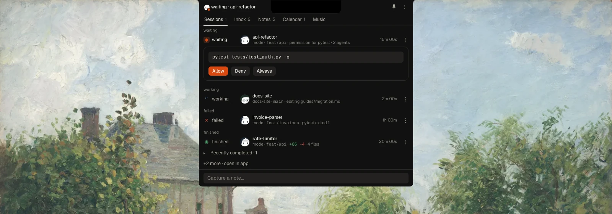
The overlay sits in the notch and shows one thing: whatever needs you most. It never takes focus from the app you are in, and it never holds a session up.
- At rest. The mascot, and the artwork of the track that is playing.
- The pill. When something needs you, the notch grows into one line, chosen by priority: a session waiting on a permission or a question comes first.
- The panel. Hover the notch and it opens with tabs for Sessions, Inbox, Notes, Calendar and Music. Allow or deny a permission, answer a question, snooze a message, tick a task, all without leaving your work.
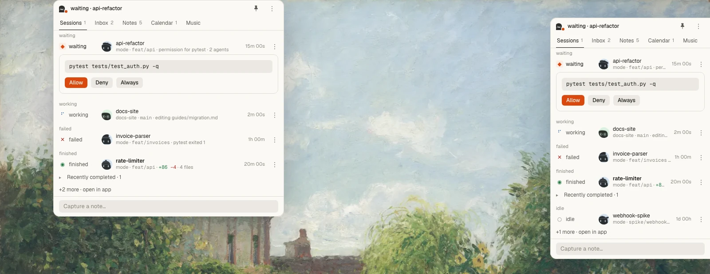
Without a notch the overlay is a bar at the top center of the screen or a panel on its right edge. The placement, what the overlay shows when nothing is happening, and which tab it opens on are in Settings, under Overlay.
Sessions
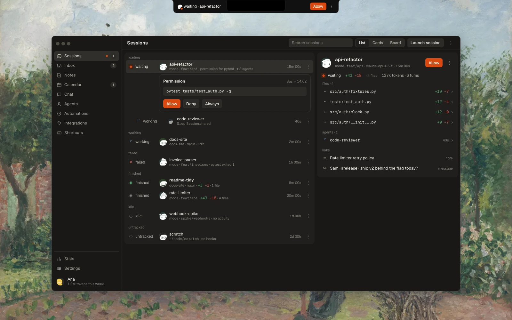
Every Claude Code session on this machine is a row in one roster, whichever terminal it runs in. Mode learns about them through Claude Code's hooks and by reading each session's transcript.
- working
- The agent is running.
- waiting
- It needs a permission or an answer from you.
- failed
- The last turn ended in an error.
- unread
- It finished and you have not looked yet.
- idle
- Nothing is happening.
- done
- You marked it finished.
- untracked
- A session Mode can see but gets no hooks from.
- Approve from anywhere. A permission request or a question shows as a card in the notch and in the app window. Answer it there and the session carries on.
- The session's page. An overview thread, the files it changed with their diffs, its subagents, and the raw transcript.
- The terminal. Sessions that Mode starts or resumes run in a terminal tab inside the window. For the rest, Mode jumps to the terminal they run in.
- Launch. Start a session with a folder, an agent, a permission mode and a model.
- Usage. A gauge of tokens and turns on every session.
Notes
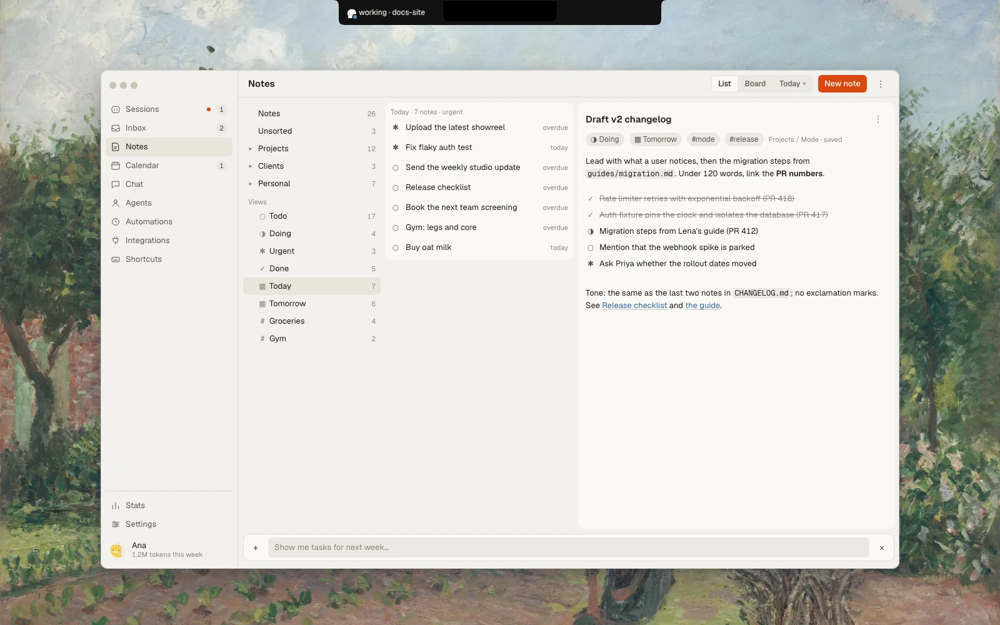
Notes are markdown files in a folder you choose. Mode indexes them; the files stay yours and open in any editor.
- Tasks. A note can carry a status (Todo, Doing, Done), an urgent flag, a when (today, tomorrow, a date) and tags.
- Views. Group notes and save the grouping as a view. The board shows the same notes as columns by status.
- The query bar. Ask in plain words, such as "urgent tasks for today". Each phrase Mode understood becomes a chip, and the answer floats over the view as cards.
- Quick capture. Write a note from anywhere, without opening the window.
- Links. A note can be tied to the session and the messages it belongs to.
Inbox
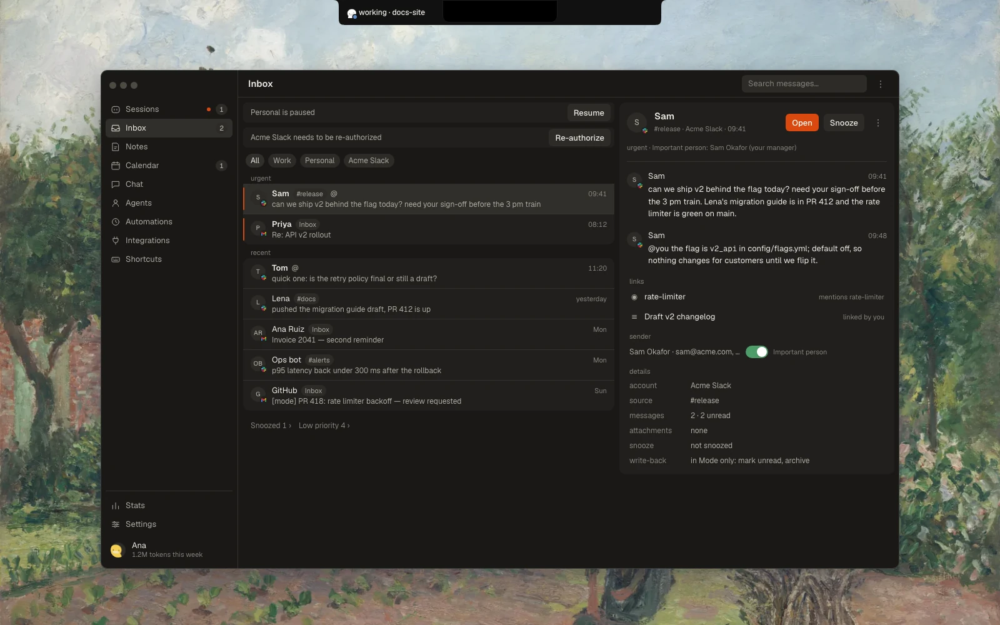
Gmail and Slack in one list, ranked by how much each message needs you. Several accounts of each, and only the Slack channels you choose.
- Ranking. People you marked as important and direct messages come first. The rest is scored by the model you chose, with one line that says why.
- Triage. Snooze, archive, mark read, or open the message where it lives. Replies are written in Gmail or Slack, not in Mode.
- Alerts. Rules decide what makes a sound or a notification. Quiet hours hold those back; the list itself keeps updating.
Calendar
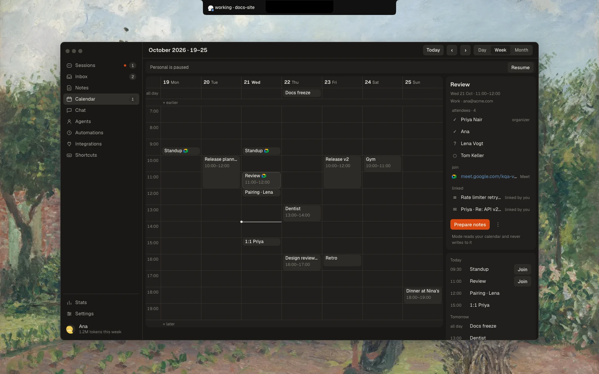
Google Calendar as a week and a month, with the agenda for today and tomorrow beside it. The next events are in the notch, with the join link when a meeting has one.
Chat
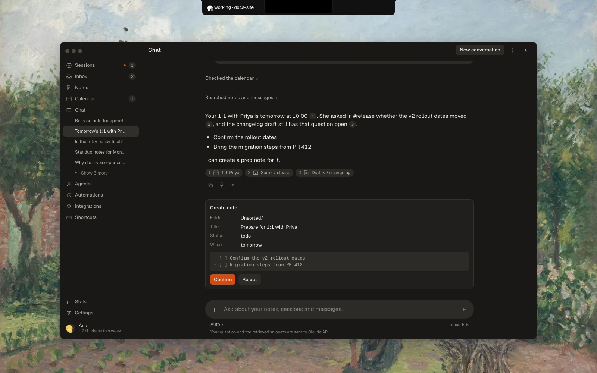
An assistant that answers from your own notes, sessions, messages and calendar. Every answer cites what it read, and a citation opens the note, the session or the thread.
- Actions. It can also act inside Mode for you, not only answer.
- Where answers come from. A provider you add with your own key, or a model running on this machine. See AI providers.
- History. Conversations are kept for 90 days unless you change that in Settings, under Chat.
Dictation and Hey Mode
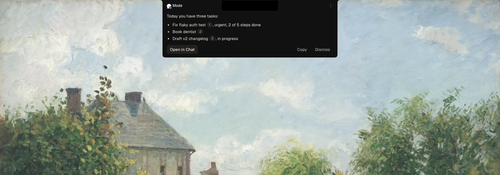
Hold the dictation key, speak, release. The words are typed into the Mode field you are in, or captured as a note when no field has focus.
- On this machine. Speech is turned into text here, by a model Mode downloads once (57 MB). The audio never leaves the device.
- Hey Mode. Start with "Hey Mode" and the rest goes to Chat as a request.
- The reply card. Ask while another app is in front and the answer streams into the notch, with its citations and buttons to open it in Chat, copy it or dismiss it. The card closes on its own after 20 seconds.
Dictation is off until you turn it on in Settings, under Dictation. The key is set in the Shortcuts view.
Now playing and Music
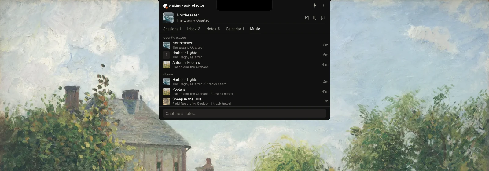
The track your player is on shows under the overlay's header with previous, play or pause, and next. Its artwork sits on the resting notch while it plays.
- Read locally. Mode asks the player on this machine. It never signs in to a streaming account.
- The Music tab. The tracks and albums Mode saw playing here, newest first. A click plays one again in the player it came from.
- History. A track is recorded after ten seconds of play. Mode keeps 90 days or 500 plays, on this device only; Settings, under Overlay, clears it.
On macOS this works with Spotify and Music, and macOS asks once whether Mode may control the player. Windows and Linux support is written but not yet tested.
Agents
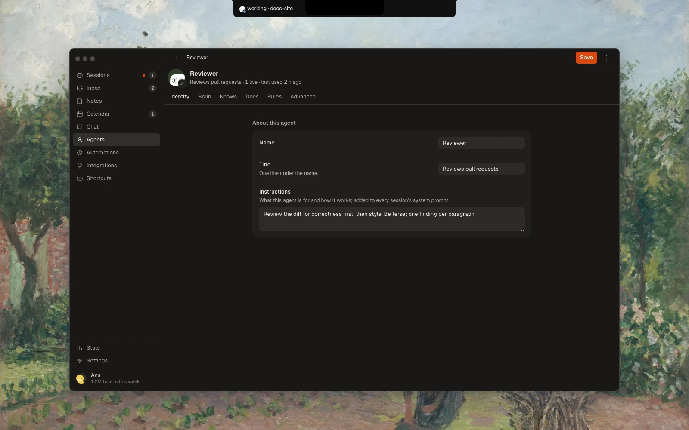
An agent is a way of working that a session is launched as: a model and an effort level, backup models for when the first is unavailable, instructions, memories read at every start, and the tools and rules it runs under.
Automations
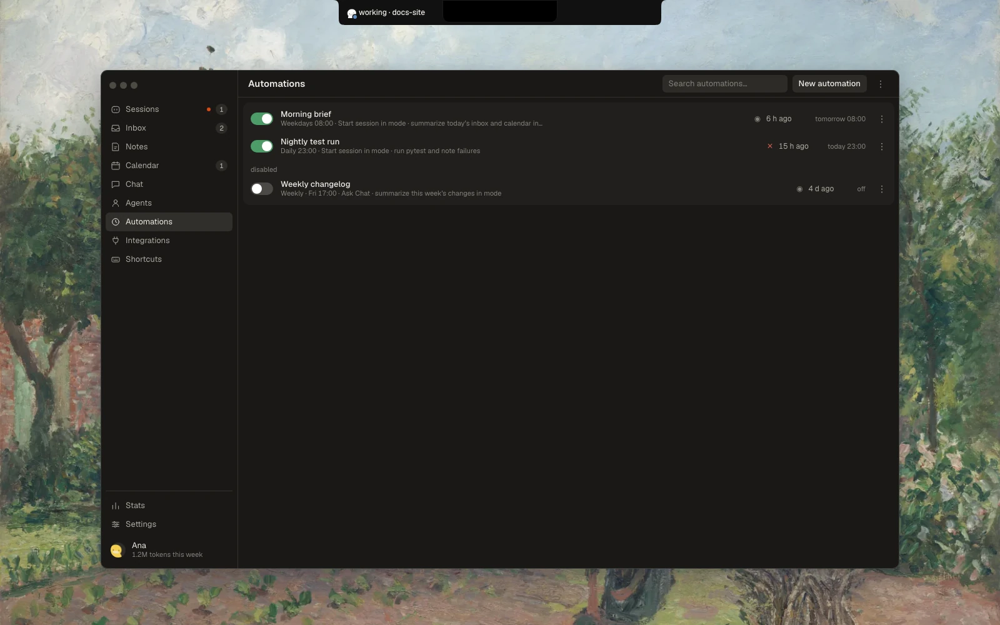
An automation runs on a schedule, such as weekdays at 08:00, and either starts a session or asks Chat for you. Every run is kept in its history with what it did.
Marketplace
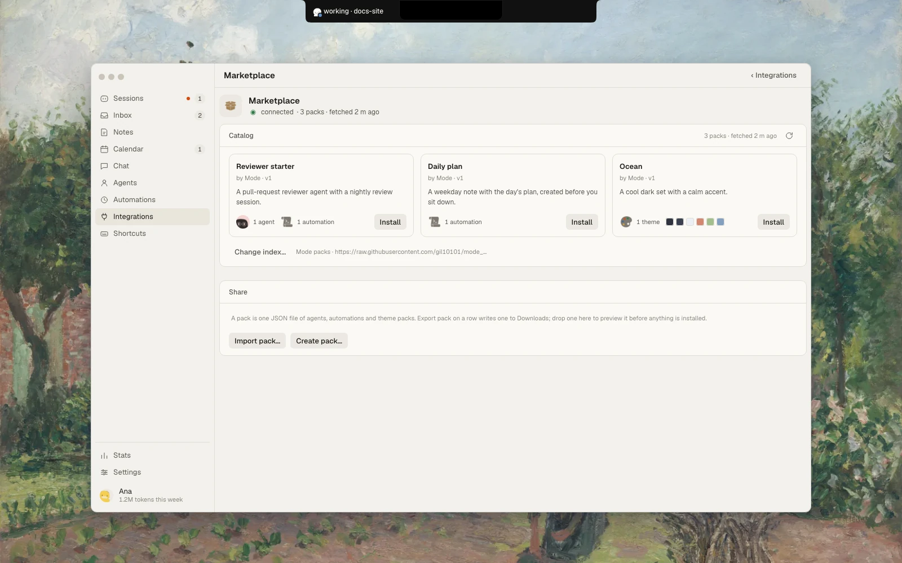
Agents, automations and themes travel as packs: plain JSON files. Export one from any row, import one with a preview of what it adds, or install from the catalog. There is no account and no payment.
Themes

Mode follows the system's light or dark appearance by default. Paper is built in, and Gruvbox, Nord and Catppuccin Mocha come as packs. A theme is a JSON file of colors, so you can write and import your own. The window and the overlay change together.
Stats
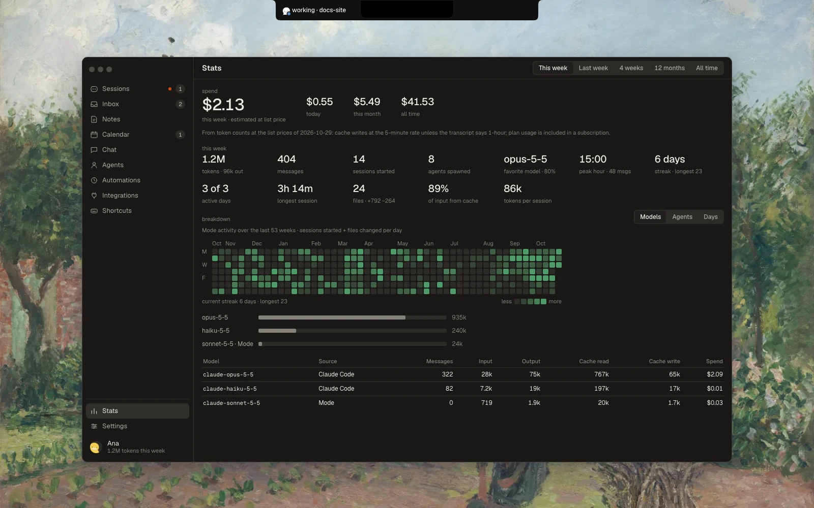
Tokens, sessions and files for the week, spend at list price, a year of activity as a grid of days, and the breakdown by model, agent and day.
Shortcuts
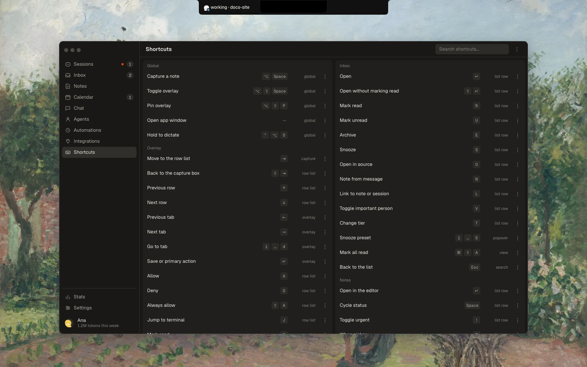
The Shortcuts view is the one place every key is listed, and where each is changed. The set can be exported and imported as a file. The command palette reaches every view, session, note and action by typing a few letters.
Integrations
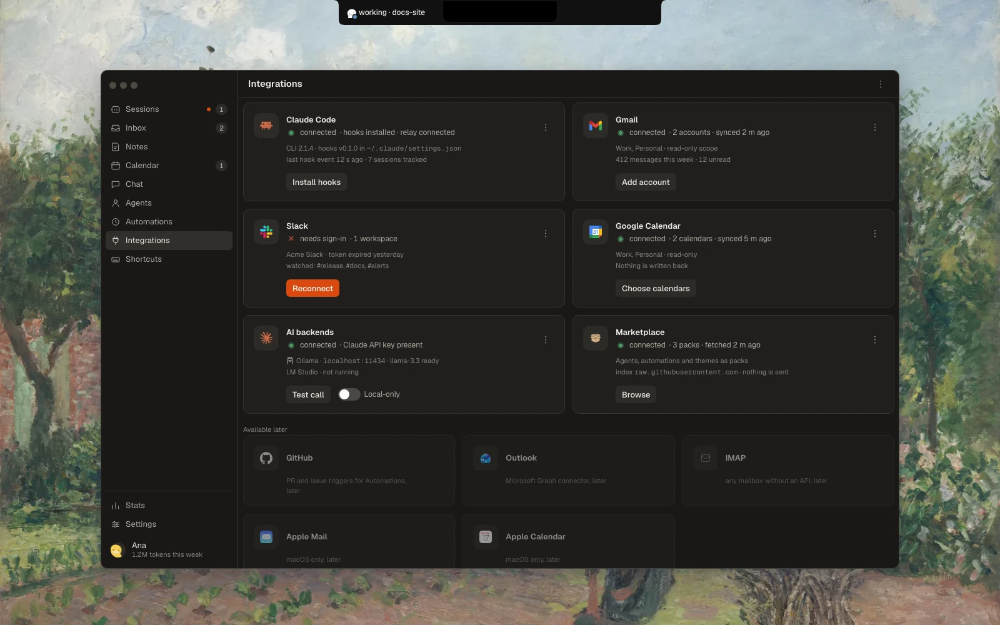
One card per connection, each with its health.
- Claude Code. Install, update or uninstall the hooks. Each change is shown as a diff first, your other hooks are left as they are, and a backup of the settings file is kept. A test sends one event through to prove the round trip.
- Gmail, Google Calendar, Slack. Sign in with each account; several of each are fine.
- Marketplace. The catalog of packs to install from.
AI providers
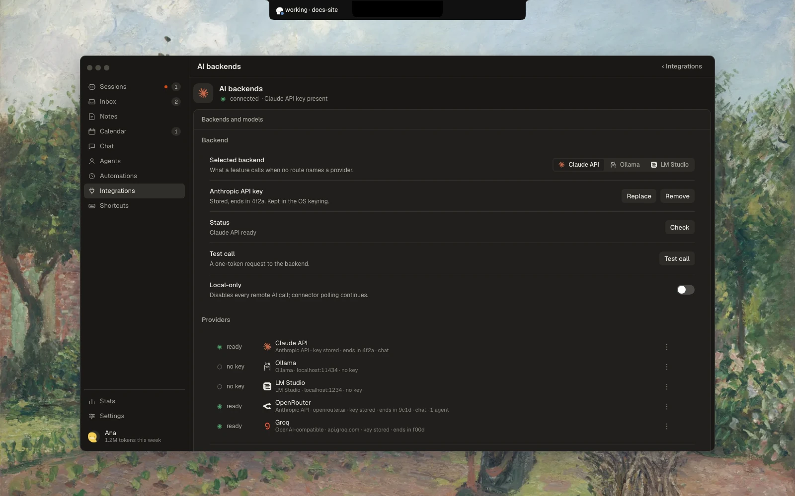
Chat, urgency scoring and the query bar each run on a provider you choose.
- Hosted. The Claude API with your own key, any endpoint that speaks the same protocol, or any OpenAI-compatible endpoint.
- Local. A model served on this machine by Ollama or LM Studio.
- Routes. Each feature has its own route, with backups for when the first provider is down.
- Local only. One switch keeps every AI feature on local models, so nothing is sent to a hosted provider.
Privacy
- Stored on this machine. Sessions, messages and settings live in a local database; notes are files in your folder. Mode has no server and no account.
- No telemetry. Mode reports nothing about you or how you use it.
- Secrets. API keys and sign-in tokens are kept in the operating system's keychain, not in files.
- What leaves the device. Requests to the services you connect, and the text an AI feature sends to the provider you chose for it. Settings, under Privacy, lists this per connection and per feature, next to the local-only switch.
- Audio. Dictation is transcribed on this machine; the audio never leaves it.
- Retention. How long sessions, messages and conversations are kept is set in Settings.
- Your data out. Export and import are in Settings, under Advanced.
Troubleshooting
- macOS will not open Mode
- The build is unsigned. Open System Settings, Privacy & Security, and confirm Mode there once.
- Windows shows SmartScreen
- Choose More info, then Run anyway.
- Sessions do not appear
- Open Integrations, Claude Code. If the hooks are missing, install them; then run the test.
- Dictation hears nothing
- Allow Mode under System Settings, Privacy & Security, Microphone, then hold the key again.
- Now playing stays empty
- macOS asks once whether Mode may control the player. If that was refused, allow it under Privacy & Security, Automation.
- Hey Mode answers with an error
- Chat has no provider yet. Add one under Integrations, AI backends.
- The overlay is in the wrong place
- Change its placement in Settings, under Overlay.
Logs and a diagnostics page are in Settings, under Advanced. Problems and ideas go to the issue tracker.